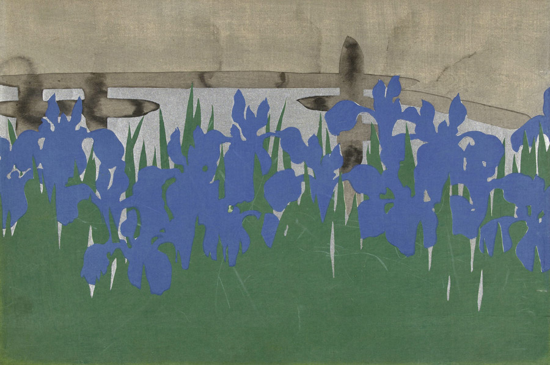

作品名 「八つ橋」
花言葉
「幸運は必ず訪れる」「幸せはあなたのもの」
「贈り物」「高貴」「思慕」
杜若
「幸運は必ず訪れる」
古くから日本人に愛されてきたカキツバタは万葉集にたびたび登場します。恋人を待つ気持ちを表現したものが多いことや、その花姿が「ツバメ（燕）」に似ており、ツバメは、幸せを運んできてくれる縁起のよい鳥ということから幸せにまつわる花言葉がつけられたと言われています。カキツバタの花の液は、服を染めるために使われていました。服を染める液を持っているカキツバタは、昔は書き付け花と呼ばれており、それが転じてカキツバタという名前がつけられました。
八つ橋
神坂雪佳
神坂 雪佳は、近現代の日本の画家であり、図案家。京都に暮らし、明治から昭和にかけての時期に、絵画と工芸の分野で多岐にわたる活動をした。2001年、『百々世草』の「八つ橋」は、ファッションブランドのエルメスが発行する雑誌『LE MONDED`HERMES』の表紙を飾った。
| 作品名 | 八つ橋 |
| 作者 | 神坂雪佳 |
| 制作年 | 1909年 |
| 種類 | カラー木版画 |
| 寸法 | 30.1cm × 46.2cm |
| 所蔵 | アムステルダム国立美術館所蔵 |